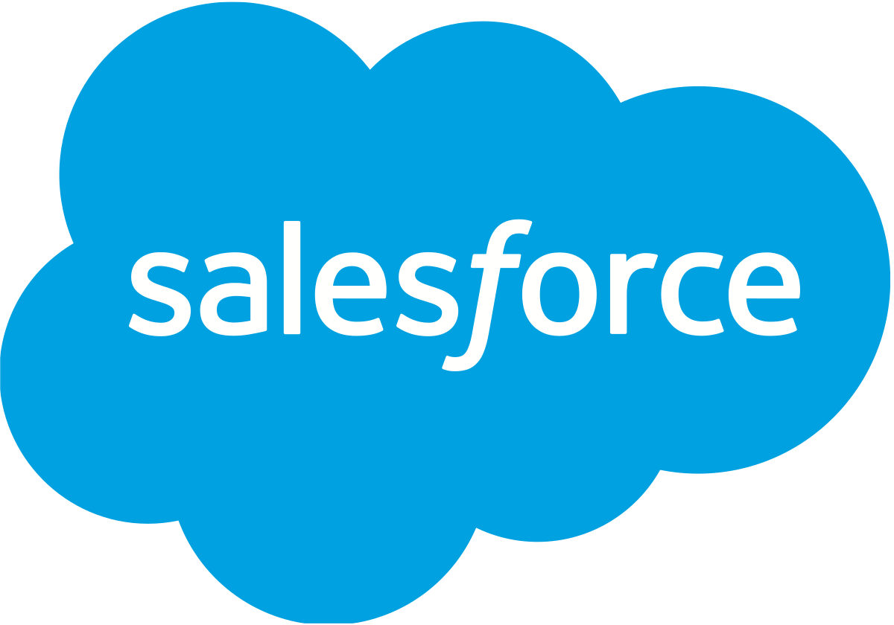

Flutter
Na het vak mobile development wou ik mij graag verdiepen in de wereld
van de mobiele applicatie ontwikkeling. aariXa organiseerde op 25
maart een seminarie in het kader van Flutter. Jaarlijks worden er één
of meer aariXa academies georganiseerd, waar een gastspreker een
nieuwe technologie uit de doeken komt doen.

Salesforce
Aangezien Salesforce op mijn werk gebruikt wordt al Customer
relationship management syteem (CRM) en steeds meer development in
Salesforce gedaan wordt leek het mij interessant om mij te verdiepen
in wat deze technologie te bieden heeft.
Own website
Als laatste activiteit heb ik gekozen om een eigen website te
ontwikkelen die later kan dienen als visitekaartje bij
sollicitatiegesprekken. Omdat Angular mij bijzonder heeft geboeid in
het eerste trimester van het schooljaar en omdat mijn stage
voornamelijk bestond uit programmeren in Angular wou ik mij graag
verdiepen in wat dit framework nog meer te bieden heeft.